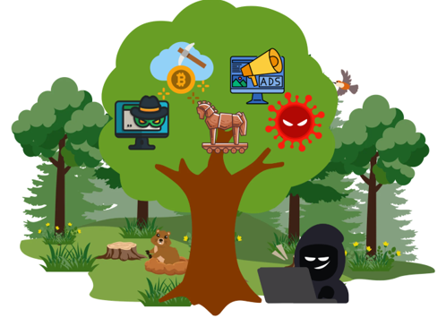

Un malware est un terme très vaste qui englobe un grand nombre de déclinaisons, mais pour faire simple, c’est l’ensemble de tout programme ou logiciel créé avec un but malveillant.
Les objectifs d’un malware peuvent être très variés, mais en général, l’objectif est bien souvent d’en tirer des gains financiers ou simplement des informations compromettantes afin d’en faire du chantage.
En premier plan, les cybercriminels vont utiliser la ruse pour réussir à introduire leur malware dans les appareils ciblés. Cela peut se faire de diverses manières, souvent avec des liens piégés partagés via de l’ingénierie sociale et du phishing, ou alors même par des failles dans le système informatique s’il y en a.
Ce qu’il faut retenir, c’est que tout le monde peut être victime de ces logiciels malveillants, alors il est important d’avoir les bons réflexes dans ces cas-là, car les hackers aussi évoluent et s’améliorent en parallèle des nouveaux moyens de protection. Pour remarquer ces différents malwares, cela peut être plus évident pour certains que pour d’autres, car il y en a qui vont totalement bloquer vos appareils comme les ransomwares, mais il y en a qui ont pour but de rester discrets et ceux-là ne seront pas vraiment visibles pour un utilisateur lambda.
Voilà une liste de différents malwares connus que vous pouvez retrouver sur vos appareils :
Sûrement le malware le plus connu des utilisateurs, celui-ci a souvent des répercussions directes sur les appareils qu’il infecte. Le virus se propage de manière assez sournoise, car il se colle à un logiciel exécutable par l’utilisateur, mais le code y est altéré afin que dès que l’utilisateur lance son programme ou logiciel, il lance obligatoirement le code du virus qui va affecter les performances de l’ordinateur en corrompant des fichiers dans l’ordinateur.
Contrairement aux virus, les vers n'ont pas besoin d'une action humaine pour se propager au sein d'un réseau. Le ver est totalement autonome, il se réplique et s'infiltre de lui-même en exploitant les failles informatiques. Concernant ses effets, ils peuvent varier selon sa fonction, voler des données, bloquer certains fichiers ou encore modifier les paramètres de vos appareils.
Voilà un exemple parfait de malware que vous ne risquez pas de remarquer, car comme son nom l’indique, il agit comme un espion. Son but n’est pas de causer des dommages à votre matériel, mais, comme un espion, il va épier tout ce que vous faites sur votre appareil et transmettre ces informations au cybercriminel. Les informations volées peuvent comprendre des mots de passe, des comptes e-mail ou encore les informations de votre carte de crédit.
Ce malware est un autre exemple de logiciel qui est difficile à détecter. Ce malware se fait passer pour un logiciel légitime, ce qui fait croire à l’appareil qu’il n’apporte aucun danger, mais bien qu’il ne fasse pas de mal à l’appareil ni aux données de l’utilisateur, il va ouvrir la voie afin que d’autres malwares puissent entrer plus facilement et ainsi avoir un contrôle sur l’appareil infecté.
Celui-ci aussi est très connu, il s’installe souvent en même temps qu’un autre logiciel qui, lui, est bienveillant, ou alors il se fait passer pour un logiciel bienveillant. Une fois installé, il va simplement faire apparaître des publicités depuis un navigateur web.
Le minage crypto est un des types de malwares les plus récents et également un des plus représentés : il représenterait près de 22 % des attaques de logiciels malveillants en 2020. Son but est d’utiliser la puissance de calcul des appareils infectés afin de miner des cryptomonnaies (le concept consiste à devoir faire des calculs complexes afin de recevoir de l’argent sous forme de cryptomonnaie) et ainsi de générer du profit au cybercriminel.

Illustration des différents malwares
Il faut impérativement avoir un programme qui détecte et désinstalle les malwares directement lorsqu’ils sont détectés. En général, ce genre de système permet de bloquer la majorité des tentatives d’intrusions et, en cas d’intrusion, il y a souvent des systèmes d’analyse qui peuvent encore détecter les malwares et les supprimer.
Il est important d’avoir des sauvegardes sur d’autres appareils, que ce soit sur le cloud ou sur un serveur externe, surtout pour les informations confidentielles. Cela permet de protéger vos données en toute éventualité, car même si vos données sont corrompues, vous aurez toujours des doubles hors d’atteinte
Il est important de tenir les logiciels d’anti-virus et d’exploitation à jour, car les logiciels malveillants n’ont de cesse d’évoluer, et si vos systèmes ne sont pas à jour, ils deviendront rapidement obsolètes. Ce sont ces appareils les plus prisés des hackers, car les failles leur sont déjà connues et cela leur facilite le travail.